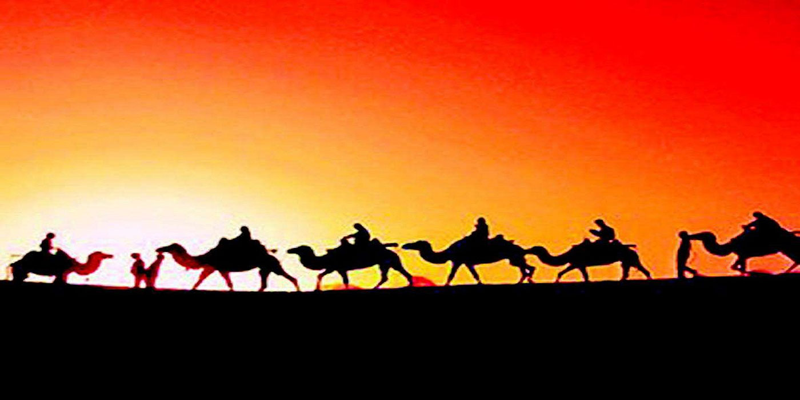

唐代丝路
作者：Cindy 日期：2017-5-16
丝绸之路交往的繁荣鼎盛时期，是继隋而建立的强大的唐朝。
唐朝第二代皇帝太宗李世民击败了东突厥吐谷浑，臣服了漠南北。唐高宗又灭西突厥，设安西、北庭两都护府。大唐帝国疆域，东起朝鲜海滨，西至达昌水（阿姆河，一说底格里斯河），是当时世界第一发达强盛国家，经济文化发展水平都居世界前列，东西方通过丝绸之路，以大食帝国为桥梁，官方、民间都进行了全面友好的交往。
在丝绸之路东段，大漠南北与西域各国，修了很多支线通丝绸之路，亦称“参天可汗道（天可汗指唐太宗）”。大食、东罗马帝国也不断派使节到长安与中国相通。敦煌、阳关、玉门这些地方，成了当时“陆地上的海市”。在海道上，中国也可以船舶赴林邑（今越南南部），真腊（柬埔寨），河陵（今爪哇岛）、骠国（今缅甸），经天竺（今印度）直至大食，与欧洲各国发生关系。当时广州、泉州、刘家港（今上海吴淞口近处）等地，成了最著名的对外港口。史书记载广州当时便有南海舶、昆仑舶、狮子国舶、婆罗门舶、西域舶、波斯舶等趸船性的船坞。西方各国在陆上取道中亚、西域，沿途驼马商旅不断；海路则多由大食首都巴格达出波斯湾，几乎每日都有船只远涉重洋来到东方。
唐代丝绸之路的畅通繁荣，也进一步促进了东西方思想文化交流，对以后相互的社会和民族意识形态发展，产生了很多积极、深远的影响，这种思想文化的交流，是与宗教密切相关的。
佛教自西汉哀帝时期传入中国后，南北朝开始大行于中国，至隋唐时达到鼎盛。唐太宗时，高僧玄奘由丝绸之路经中亚往印度取经、讲学，历时十六年，所著《大唐西域记》一书，记载了当时印度各国的政治、社会、风土人情，至今仍为印度学者研究印度中世纪历史的头等重要资料。他取回佛教经典657部，唐高宗特在长安建大雁塔使其藏经、译经。稍后，高僧义净又由海道去印度，又历时十六年，取回佛经400部，所著《南海寄归内法传》、《大唐西域求法高僧传》，向中国介绍了当时南亚各国的文化、生活情况。
景教（东正教）在唐初由东罗马帝国传入了中国。西安碑林保存的《大秦景教流行中国碑》是这一史实的实物见证。唐中期自波斯传入的摩尼教（亦称袄教、拜火教），中国化后称为“明教”，深为不少劳动人民所信奉。唐宋后多次农民起义的领袖，都利用它的教义来组织贫苦农民与封建统治者战斗。中国的造纸术、盛唐时也传入了大食帝国，不久便经它传入了欧洲各国。
唐代，东西方相互传入和移植的东西很多，医术、舞蹈、武学和一些著名动植物，都使双方增加了不少视野。汉代将西方输入的东西冠以胡字，如胡琴、胡瓜、胡萝卜等；唐代则习将它们名称冠以海字，如海棠、海石榴、海珠（波斯湾珍珠）等。据《唐会典》载，唐王朝曾与三百多个国家和地区相通使交往，每年取道丝绸之路前来长安这个世界最大都市的各国客人，数目皆以万计，定居中国的，单广州便以千计。
唐代丝绸之路的畅通繁荣，也进一步促进了东西方思想文化交流，对以后相互的社会和民族意识形态发展，产生了很多积极、深远的影响。
经过安史之乱后唐朝开始衰落，西藏吐蕃越过昆仑山北进，侵占了西域的大部;中国北方地区战火连年，丝绸、瓷器的产量不断下降，商人也唯求自保而不愿远行，丝绸之路逐步走向低谷。